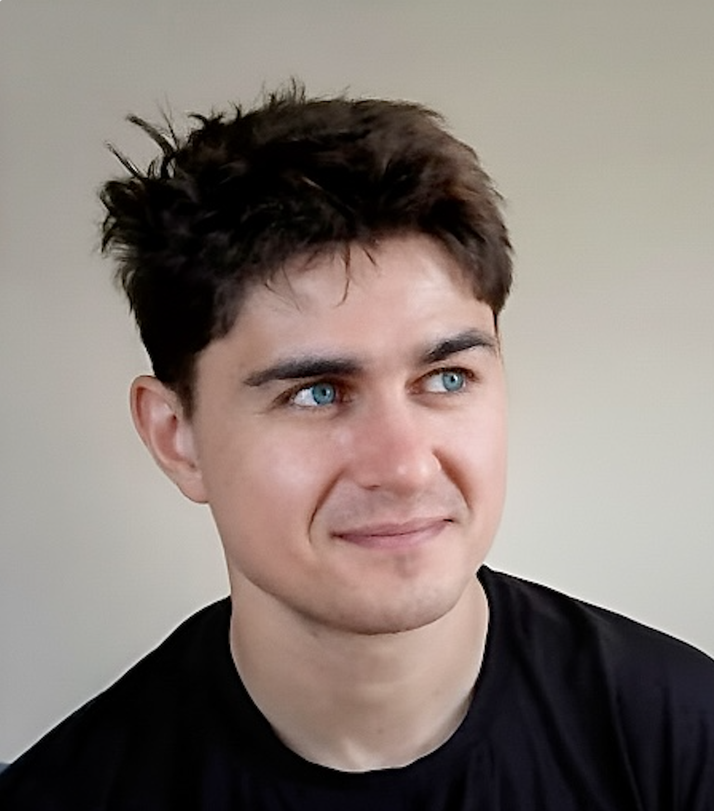

<!-- <h3>About me:</h3> -->

<div class="container-about">
<div class="text-with-image">
<!--  -->

<p>
I'm currently working on a new venture in the AI space (stealth).
<br><br>
I also run <a href="https://clayvc.io">Clay VC</a>, an angel syndicate investing in early stage startups in the creative AI space, as well as investing personally. I'm a first round investor in 20+ companies including ElevenLabs, Mistral, Lovable, Cusp AI, Curio AI, Paradigm AI and Slingshot AI.
<br><br>
I was previously a Senior Research Scientist in the Machine Learning team at <a href="https://deepmind.google/">DeepMind</a>, where I worked on improving pre-training compute efficiency for multimodal foundation models.
<br><br>
Previously, I was a postdoc at the <a href="https://www.imperial.ac.uk/dyson-robotics-lab/">Dyson Robotics Lab</a> at Imperial College London, where I worked on real-time distributed inference and abstraction in spatial / visual perception systems. I did my PhD at University College London working on memory systems.
<br><br>
I love trail running and just finished my first <a href="https://pegasusultrarunning.com/the-eddum-results-2025/">ultra marathon</a>. My next race will be the <a href="https://worldsmarathons.com/marathon/ultra-x-110-finland/">Ultra-X Finland</a> in June 2026.
</p>
</div>
</div>
